离散数学
第四章 函数
函数的基本概念
定义：
- 设f是集合到的一个二元关系，如果对每个，都有唯一的，使得，则称f是X到Y的函数，记作：
- 注： :前域； ：陪域; : 原像； ：像;∈
- 称上的恒等关系 为上的恒等函数,对所有的x∈A都有 。
- 设：，：，则的充要条件是
- ;
- ;
- 对∈,=。三者缺一不可
记：={|：->}，表示X到Y的所有不同函数的集合。若||=,||=,则||=。
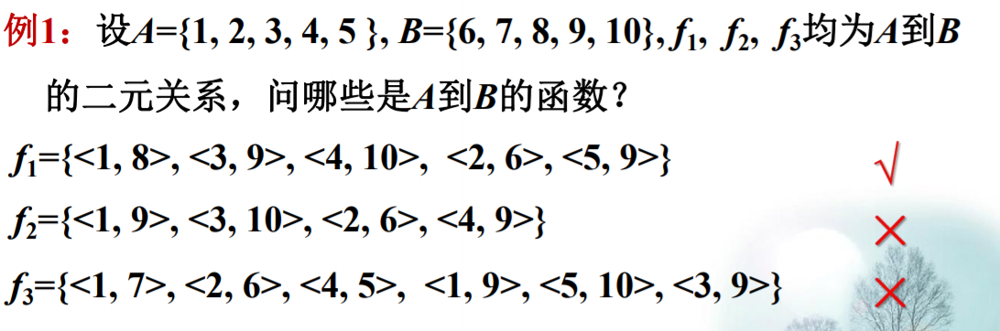

函数的性质
定义：
- ：，
- 若X中不同的元素有不同的像，即对，∈,若≠则()≠()，称f为单射函数（也叫内射函数)；
- 若对∈，均有∈，使，则称f为满射函数；
- 若f既是单射函数又是满射函数，则称为双射函数。
定理：
- 当X和Y均为有限集时，：->,
- 为单射函数的必要条件是：≤；
- 为满射函数的必要条件是：≤;
- 为双射函数的必要条件是：=。


函数的运算
函数的符合运算
定理：
- 设 ：-> , ：->, 则 和 进行关系合成后得到
一个新关系 。 是X到Z的函数。- 注：设 ：-> , ：->, 则 和 进行关系合成后得到函数一
般记为： 。=(())。
- 设, ,为函数, 则( 。 ) 。 和 。 ( 。 )都是函数, 且( 。 ) 。 = 。 ( 。 )
- 设 f：-> , g：->, 则:
- 若 和 都是单射，则 。 也是单射；
- 若 和 都是满射，则 。 也是满射；
- 若 和 都是双射，则 。 也是双射。
- 设 f：-> , g：->, 则:
- 若 g 。 f 是单射，则 f 是单射 ；
- 若 g 。 f 是满射，则 g是满射；
- 若 g 。 f 是双射，则 f 是单射 , g是满射 。
- 设 ：-> 是双射函数，则的逆关系 是Y到X的函
数, 且 是双射函数。
- 设 X, Y, Z是三个集合， f：-> , g：->, 都是可逆的，
则 。 也是可逆的，且 (g。f)^{-1} = 。 。
- 设 : →是可逆的, 则 。f = , f 。 =
- 对于双射函数 : →, 有 。 = 。 =

 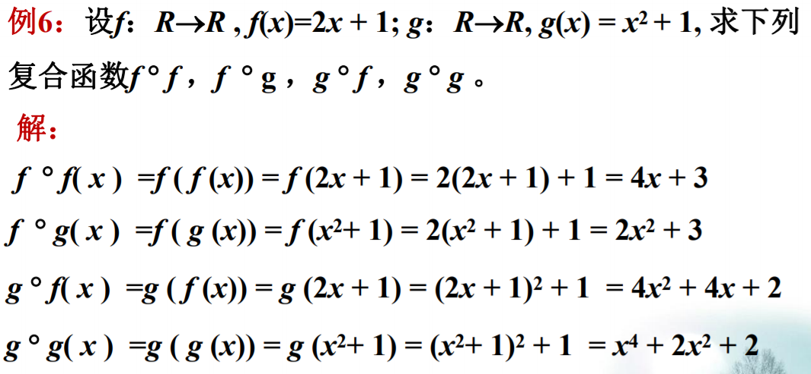
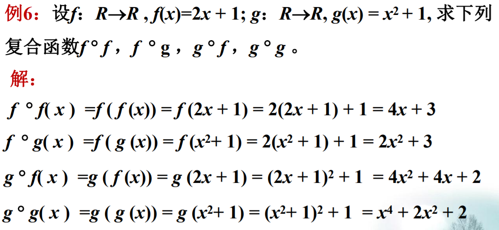

置换
定义：
- 集合A上的一个双射函数，称作A上的一个置换。
注：- 若|A| = n， 则A上不同的置换的个数为n!。
- 一个置换的逆仍然是一个置换。例如： =
- 两个置换的合成仍然是一个置换，即置换对关系的合成运算是封闭的。
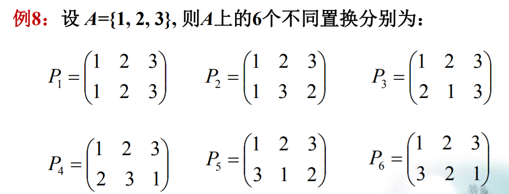
无限集合
集合等势及其性质
定义：1.对集合A和B，设f：A->B是双射函数，则称A和B等势，记作：A~B。
定理：1.集合之间的等势关系~是等价关系。
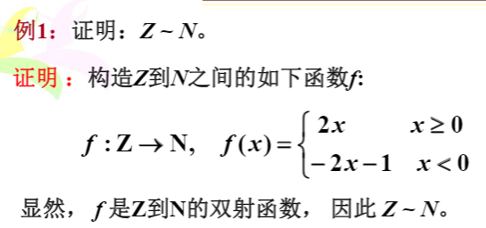

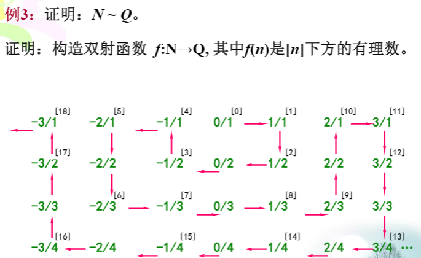
可数无限集合
定义：一个集合A如果与自然数集N等势，则称A为可数无限集,其势记为
定理：
任一无限集合必包含一可数无限子集。设A为可数无限集，B为有限集，且A∩B=Ø，则AUB为可数无限集。设集合A和集合B均为可数无限集，且A∩B=Ø，则AUB为可数无限集。可数个可数无限集的并集仍然是可数无限集。所有的正有理数组成的集合为可数无限集。

不可数集
定理：
（0,1)是不可数集,其势记为对任意的集合A,|A|<||
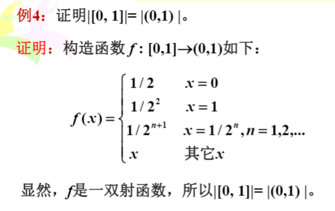


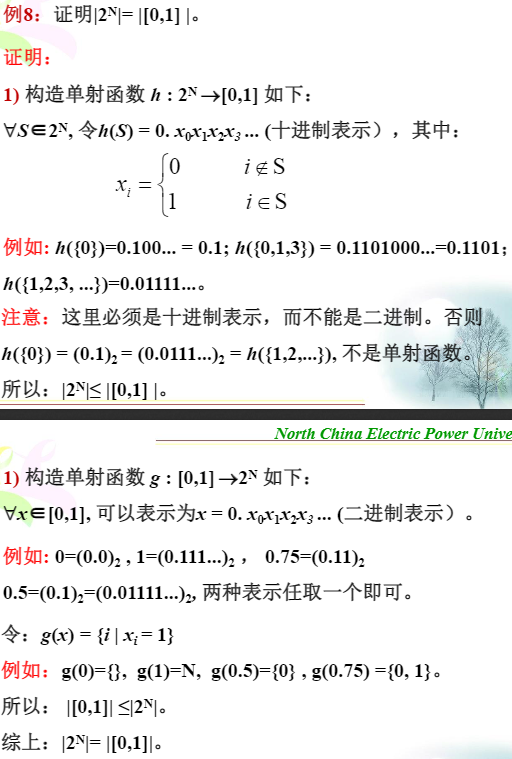
抽象代数
代数结构的基本概念
代数运算
定义：
设S为集合，函数f：SxS->S称为S上的二元运算，简称为二元运算。设S为集合，函数f:S→S称为S上的一元运算，简称一元运算。
注：
1）S中任何两个元素都可以进行运算，且运算的结果惟一；2）S中任何两个元素的运算结果都属于S，即S对该运算封闭。
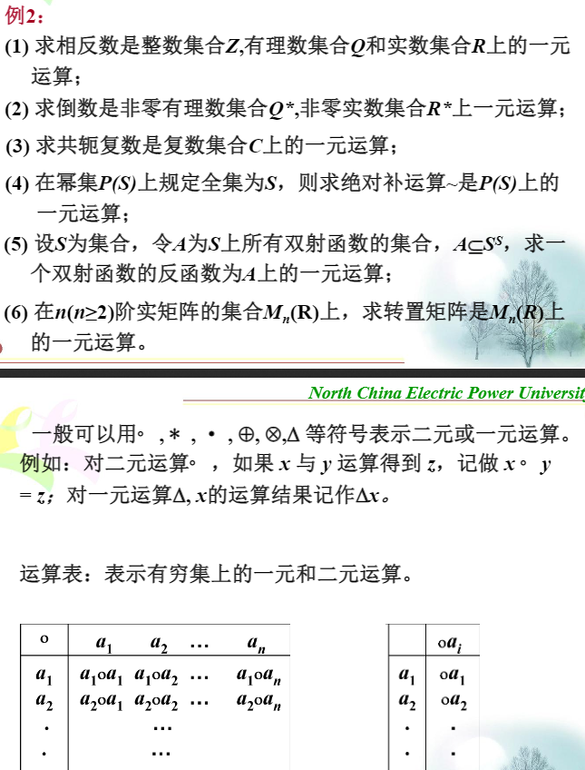
运算性质
定义：
设*为S上的二元运算,
(1)若对任意x,y∈S有x*y=y*x,则称*在S上满足交换律；
(2)若对任意x,y,z∈S有(x*y)*z=x*(y*z),则称*在S上满足结合律；
(3)若对任意x∈S有x*x=x,则称*在S上满足幂等律；
(4)若对任意x,y,z∈S有,当x*y=x*z,y*x=z*x时，必有x=y,则称*在S上满足消去律设。和*为S上两个不同的二元运算,
(1)若对任意x,y,z∈S有(x*y)z=(xz)∗(yz)，z(x∗y)=(zx)∗(zy),则称对∗满足分配律；
(2)若。和∗都可交换,且对任意x,y∈S有x。(x∗y)=x，x∗(x。y)=x,则称。和∗满足吸收律。
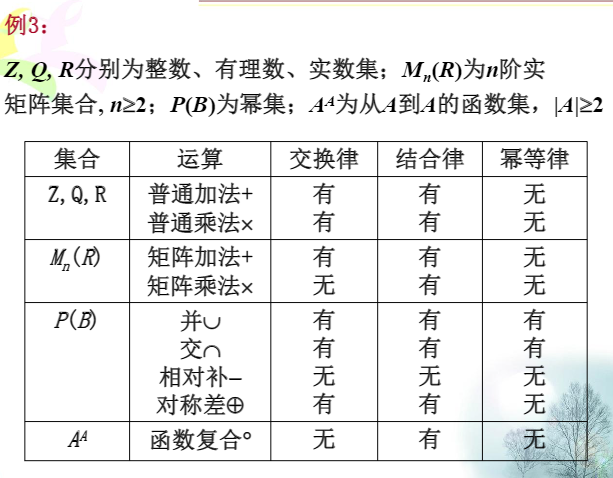


特殊元素
定义：
-
设*为S上的二元运算,如果存在(或)∈S，使得对任意x∈S都有*x=x(或x*=x)，则称(或)是S中关于*运算的左(或右)单位元。若e∈S关于*运算既是左单位元又是右单位元，则称e为S上关于*运算的单位元.单位元也叫做幺元。 -
设*为S上的二元运算如果存在(或)∈S，使得对任意x∈S都有：*x=(或x*=)，则称(或)是S中关于*运算的左(或右)零元。若z∈S关于*运算既是左零元又是右零元，则称z为S上关于运算*的零元。 -
设*为S上的二元运算,令e为S中关于运算*的单位元,对于x∈S，如果存在(或∈S使得*x=e（或x*=e）,则称(或是x的左逆元（或右逆元）。关于*运算，若存在∈S既是x的左逆元又是x的右逆元，则称为x的逆元。如果x的逆元存在，就称x是可逆的。
定理：
设*为S上的二元运算，和分别为S中关于运算的左和右单位元，则==e为S上关于*运算的唯一的单位元。设*为S上的二元运算，和分别为S中关于运算的左和右零元，则==z为S上关于*运算的唯一的零元。设*为S上可结合的二元运算,e为该运算的单位元,对于x∈S如果存在左逆元和右逆元,则有==,且是x的惟一的逆元。
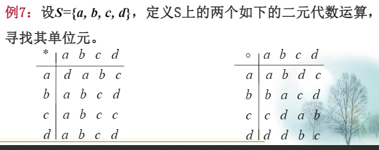


代数结构
定义：
非空集合S和S上k个代数运算,,...,组成的系统称为代数系统,简称代数，记做<S,,,...,>。设V=<S,,,...,>是代数系统，B是S的非空子集，如果B对,,...,都是封闭的，且B和S含有相同的代数常数，则称<B,,,...,>是V的子代数系统，简称子代数。
说明：子代数和原代数是同种的代数系统；对于任何代数系统V=<S,,,...,>，其子代数一定存在；最大的子代数：就是V本身；最小的子代数：如果令V中所有代数常数构成的集合是B，且B对V中所有的运算都是封闭的，则B就构成了V的最小的子代数；大和最小的子代数称为V的平凡的子代数若B是S的真子集，则B构成的子代数称为V的真子代数。

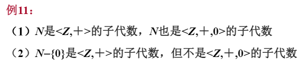

半群
定义：
(1)设V=<S,*>是代数系统，*为二元运算，如果*运算是可结合的，则称V为半群；
(2)设V=<S,*>是半群，若e∈S是关于*运算的单位元，则称V是含幺半群，也叫做独异点。有时也将独异点V记作V=<S,*,e>。设<S,*,e>是一个独异点（含幺半群），如果存在g∈S，使得对任意的a∈S，都有a=g*g*...*g=(h∈N),则称<S,*,e>为循环独异点，g为生成元。
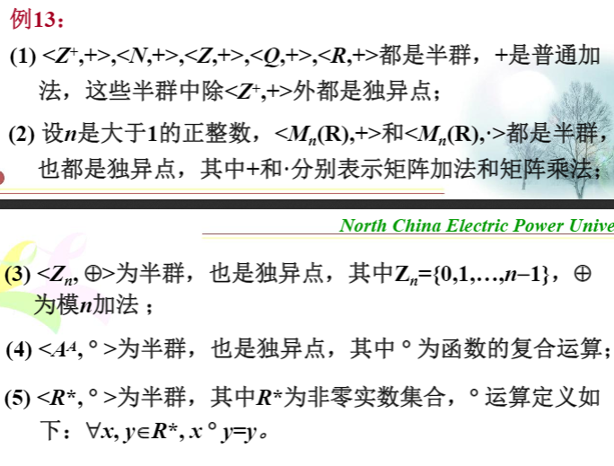
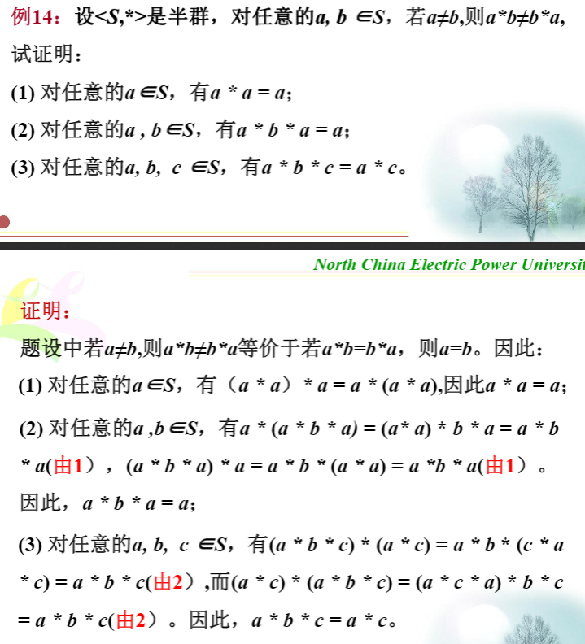

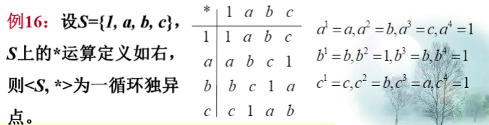
同态和同构
定义：
(1)如果两个代数系统中运算的个数相同，对应运算的元数相同，且代数常数的个数也相同，则称它们是同类型的代数系统。
(2)如果两个同类型的代数系统规定的运算性质也相同，则称为同种的代数系统。设V1=<A,∘>和V2=<B,*>是同类型的代数系统，f:A->B，且,y∈A有f(x∘y)=f(x)*f(y),则称f是V1到V2的同态映射，简称同态。(1)f如果是单射，则称为单同态；
(2)如果是满射，则称为满同态，这时称V2是V1的同态像；
(3)如果是双射，则称为同构，也称代数系统V1同构于V2；
(4)如果V1=V2，则称作自同态。
性质：
- 设代数系统
<X,*>和<Y,∘>同构，g是同构映射，则:
1）若在X上可结合，则∘在Y上也可结合；
2）若在X上可交换，则∘在Y上也可交换；
3）若<X,*>有单位元，则<Y,∘>也有单位元，且=g()；
4）若<X,*>有零元,则<Y,∘>也有零元，且=g()；
5）若<X,*>关于元素a有逆元,<Y,∘>关于b有逆元，则若g(a)=b,则=g()。

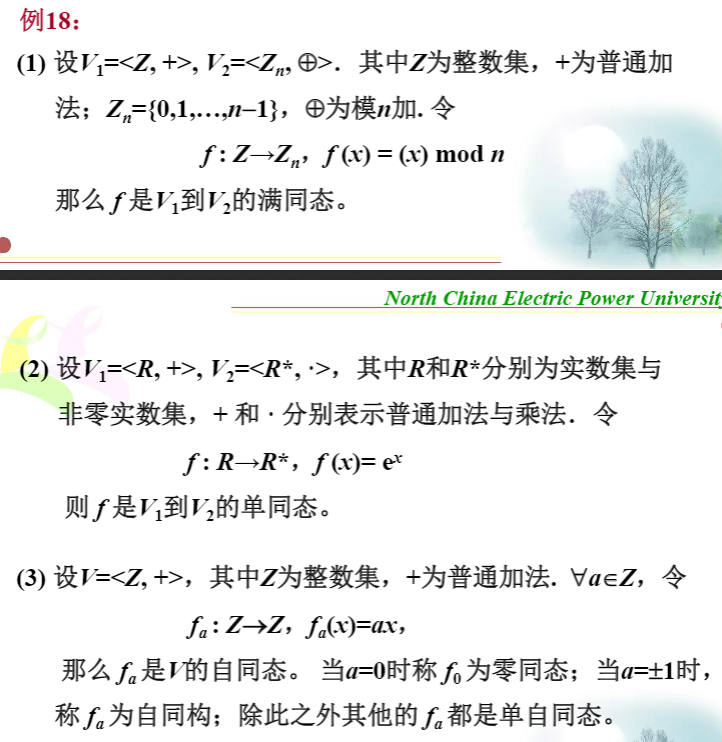

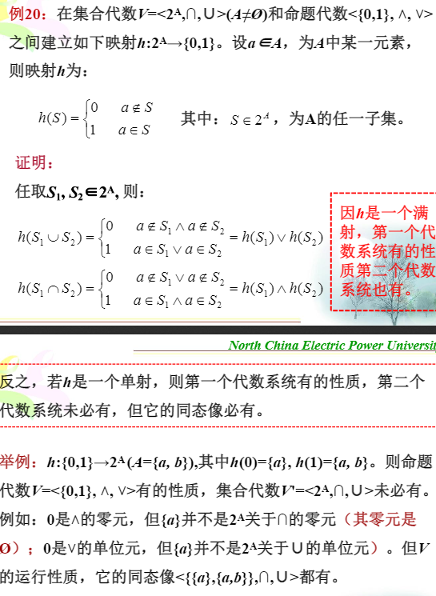
同余关系
定义：
- 设~是A=
<S,*,Δ>的载体S上的等价关系，任取a,b,c∈S
(1)当a ~ b时，若ac ~ bc,ca ~ cb,则称 ~ 是关于运算*的同余关系；
(2)当a ~ b时，若Δa ~ Δb,则称关系 ~ 是关于运算Δ的同余关系。 <S,*,Δ>上的等价关系 ~ ，如果 ~ 在S上的每个运算下都具有置换性质，则称 ~ 是S上的同余关系。- 设g是A=
<S,*>到A'=<S,*'>的一个同态，g:S→S'可诱导出一个S上的自然等价关系，这一关系定义为：a,b∈S,a ~ b当且仅当g(a)=g(b)。

定理:
- 等价关系 ~ 关于二元运算*是同余关系的充要条件是当a ~ b,c ~ d时有，ac ~ bd。
- 设g是从代数系统A=
<S,*,Δ>到代数系统A'=<S',*',Δ'>的同态映射，如果在A上定义二元关系R为：a ~ b,当且仅当g(a)=g(b)，则 ~ 为A上的一个同余关系。
一个同态可以诱导出一个同余关系，反之亦然。
运算上的同余关系:等价关系在运算下的可保持性是指参与运算的对应元素，如果在同一个等价类中，则运算后的结果也必在同一个等价类中。
代数系统上的同余关系:等价关系 ~ 若果在代数系统A的所有运算下都是可保持的，则 ~ 是A上的同余关系。同余关系使得元素所在的等价类在运算上可作为一个整体来考虑。
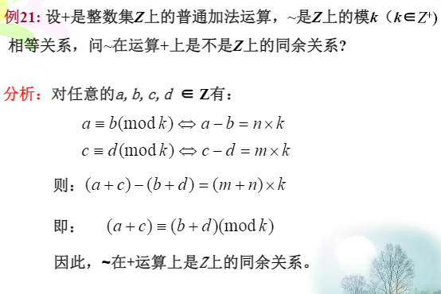


商代数、积代数
商代数
定义：
- 设A=
<S,*,Δ,k>是一个代数系统， ~ 是A上的同余关系，A关于 ~ 的商代数A/~=<S/~,*',Δ',[k]>,其中，Δ'[a]=[Δa],[a]'[b]=[a b]S/ ~ 表示S关于等价关系~的商集。
性质：
1）代数A中如果运算是可交换的，则A/ ~ 上的运算'也是可交换的；
2）代数A中如果运算是可结合的，则A/ ~ 上的运算'也是可结合的；
3）如果k是代数A中关于运算的单位元，则[k]也是A/ ~ 上关于运算'的单位元；
4）如果k是代数A中关于运算的零元，则[k]也是A/ ~ 上关于运算'的零元。
定理：
- 如果~是代数A=
<S,*,Δ,k>上的同余关系，那么规范映射h:S→S/ ~ ,h(a)=a是从A到商代数A/ ~ =<S/ ~ ,*',Δ',[k]>的同态映射，称为与 ~ 相关的自然同态。 - 设f是从代数A=
<S,*,Δ,k>到A'=<S',*',Δ',k'>的同态， ~ 是A上由f诱导出的同余关系，那么从商代数A/ ~ =<S/~,*'',Δ'',[k]>到<f(S),*',Δ',k'>存在同构。

积代数
定义：
- 设A=
<S,*,Δ,k>和A'=<S',*',Δ',k'>是两个同类型的代数系统，则A和A'的积代数定义为：V=<SxS',*'',Δ'',k''>,其中：SxS'={<a,a'>|a∈S,a'S'},任取<a,c>∈SxS',<b,d>∈SxS',<a,c>*''<b,d>=<a*c,b*'d>,Δ''(<a,c>)=<Δa,Δ'b>,k''=<k,k'>。
性质：
设V1=<A,◦>和V2=<B,*>是同类型的代数系统，V1xV2=<AxB,▪>是它们的积代数,则：
(1)如果◦和运算是可交换（可结合、幂等）的，那么▪运算也是可交换（可结合、幂等）的；
(2)如果和（和）分别为◦和运算的单位元（零元），那么<,>（和）也是▪运算的单位元（零元）。
(3)如果x和y分别为◦和*运算的可逆元素，那么<x,y>也是▪运算的可逆元素，其逆元就是<,>
群
定义：
- 设V=
<S,*>是独异点，e∈S关于*运算的单位元，若a∈S，∈S，则称V是群，通常将群记作G。